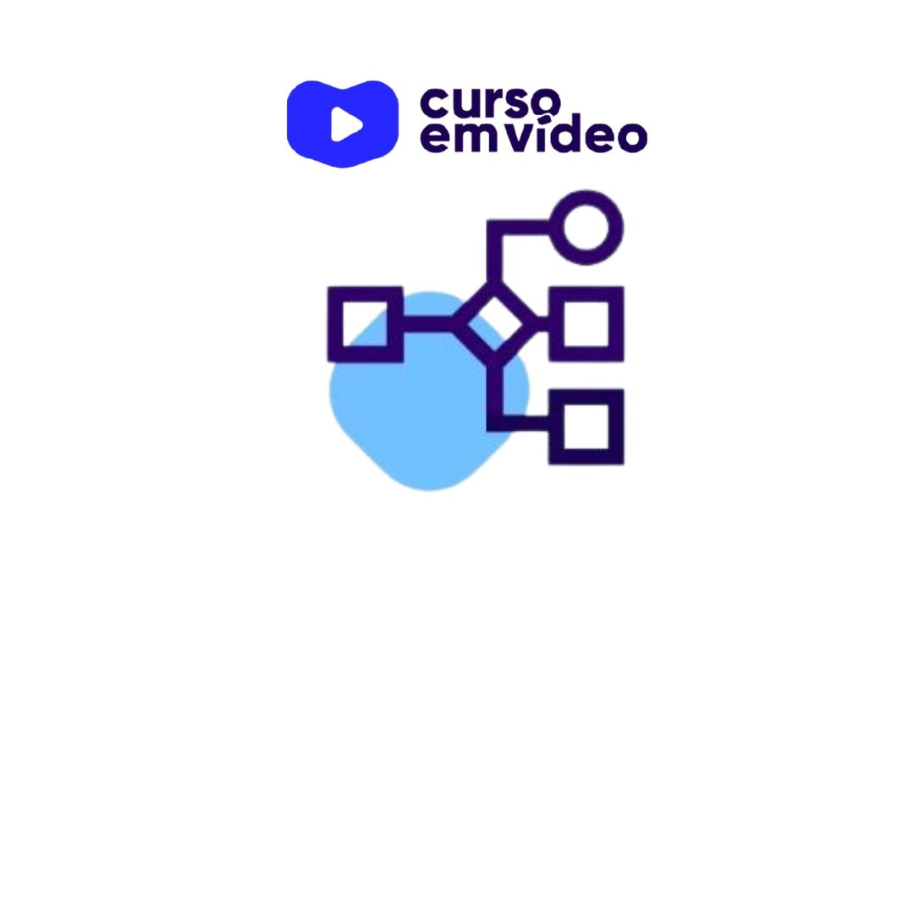
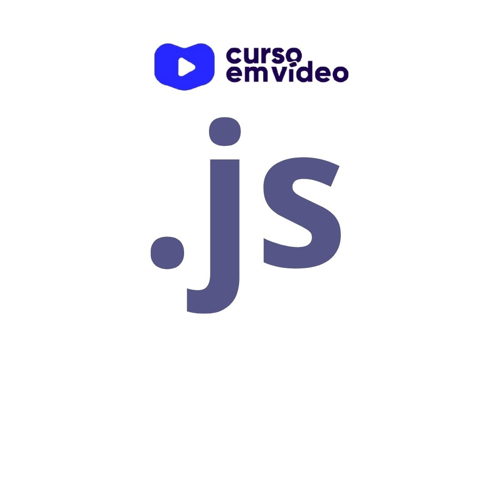
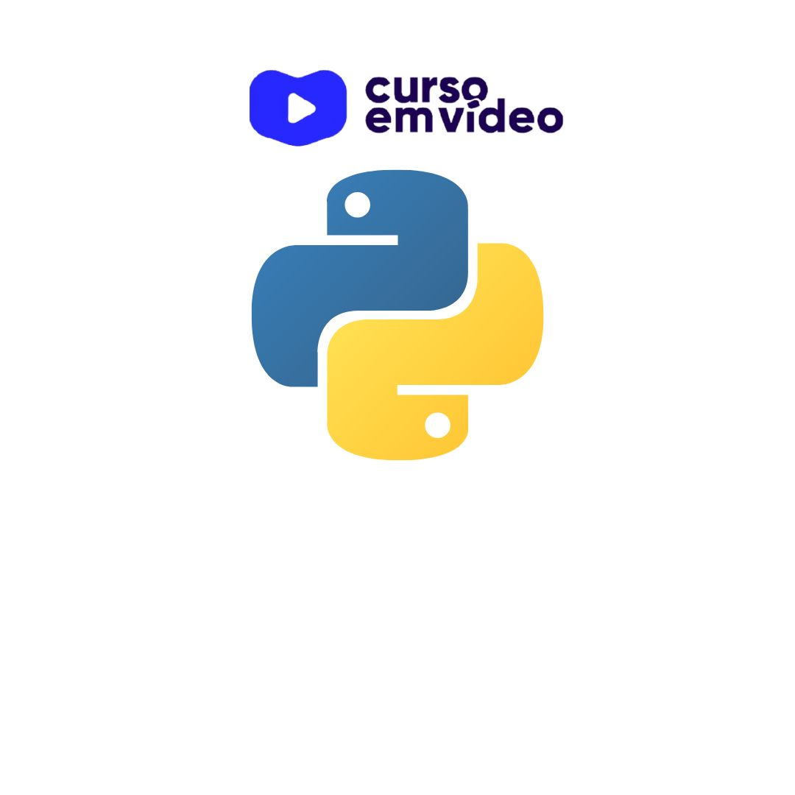
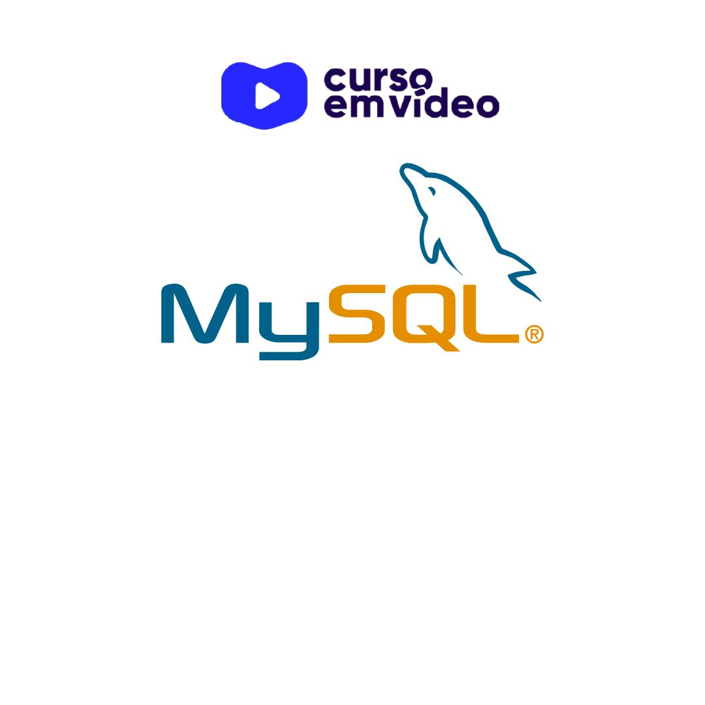
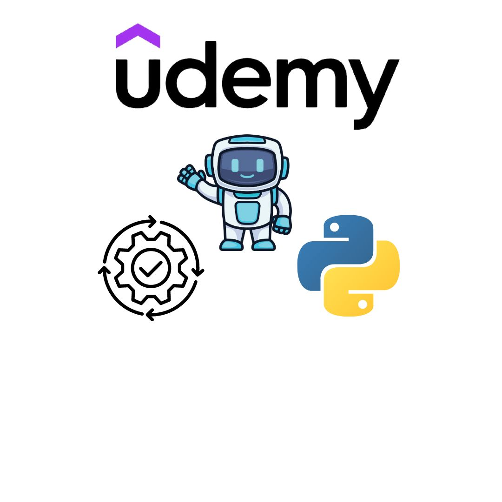
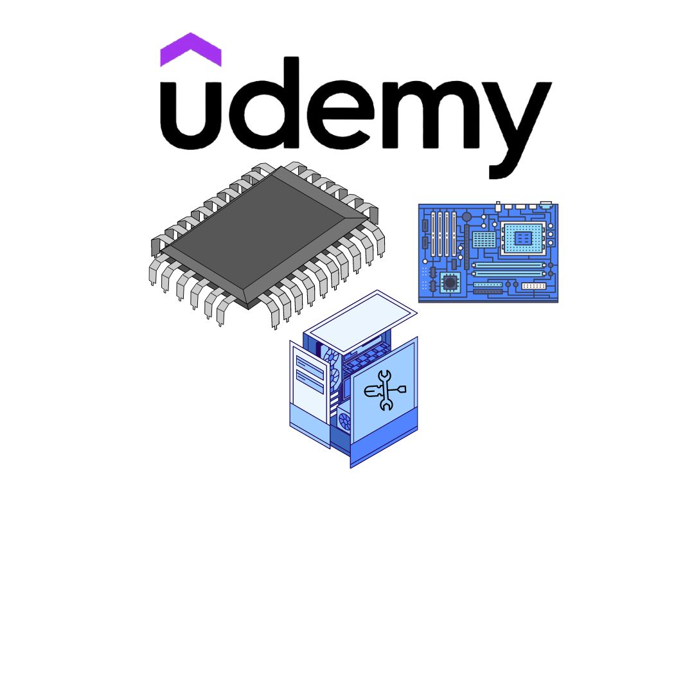
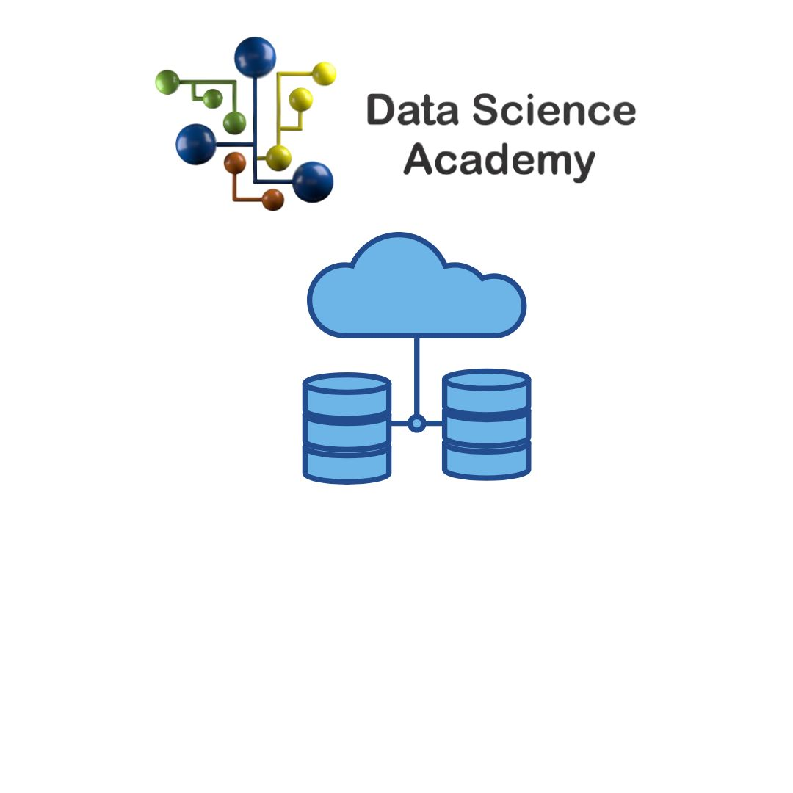
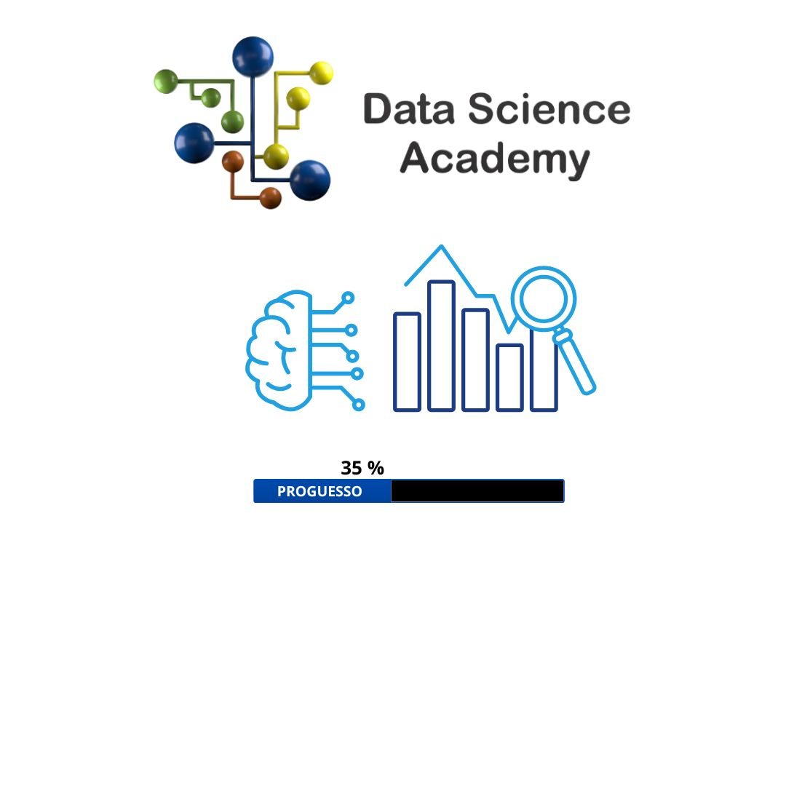

Skils
Sempre disposto a aprender novas tecnologias para aumentar minhas skils e capacidade de solucionar problemas
Python
HTML
CSS
Bootstrap
Django
Java Script
My SQL
S&O
Linguas
Inglês
Espanhol
Educação/Cursos
Um pouco do que estudei em 2,5 anos como Desenvolvedor

Algoritimos/Logica de Programação
[40 HORAS]
HTML-5/ CSS
[40 HORAS]

Java Script
[20 HORAS]

Curso de Python
Curso de Python
Mundo 1,Mundo 2,Mundo 3
[120 HORAS]

Banco de Dados My SQL
[40 HORAS]

Criando Robôs com Python
Criando Robôs com Python
Automatizando Processos
[10.5 HORAS]

Fundamentos do Ethical Hacker
[12.5 HORAS]

Montagem e Manutenção de Computadores
[7.5 HORAS]

Fundamentos de Engenharia de Dados
[24 HORAS]

Python Para Análise de Dados e Data Science
[72 HORAS]